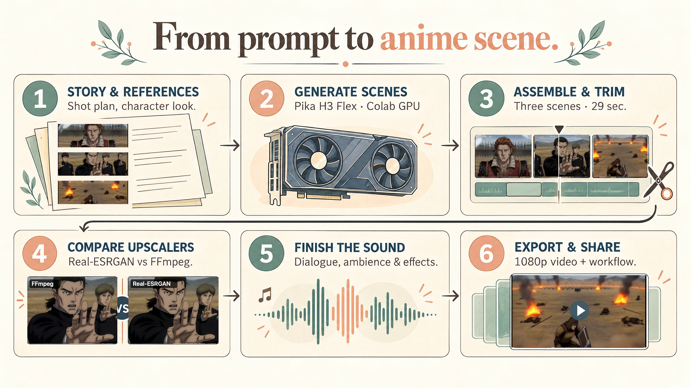
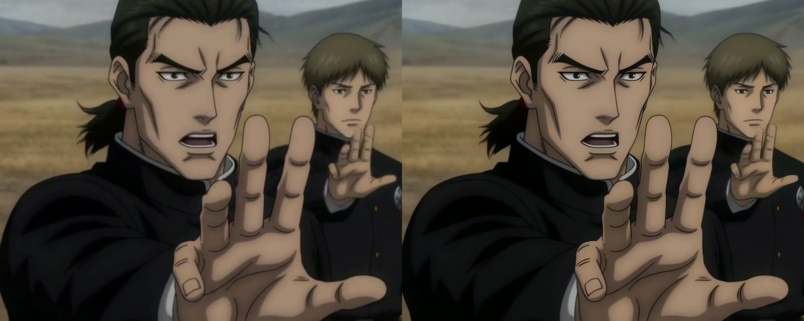

I’ve been a fan of The Wheel of Time for a long time, and Dumai’s Wells is one of those scenes I’ve always wanted to see animated. When Pika released H3 Flex, I had some Colab credits left and wanted to see what it could do with the Asha’man’s attack — with the energy of Jujutsu Kaisen rather than a live-action look.
I started with a 15-second test and ended up with three generated scenes, a shorter edit, a 1080p upscale and a sound pass. I used Codex to help direct and run the workflow, then turned the useful parts into a reusable skill. Here’s the result and how it came together.
Dialogue transcript
Rand: “They’re closing in.”
Taim: “Asha’man, prepare.”
Taim: “Asha’man, kill!”
Rand: “Light… what have we done?”


The first render
The first prompt covered Rand’s escape, the Asha’man forming up and a wave of the One Power crossing the battlefield. Pika generated the picture and stereo audio together. It was a useful test, but Rand came out looking more like a generic spiky-haired anime protagonist than the character I had in mind.
For the next attempt I used a fan illustration as an appearance reference: longer auburn hair, light eyes and a red-and-gold coat. The listing attributes the illustration to Anass Boumarag; I couldn’t independently confirm the original artist page. The reference-to-video mode let the model borrow the character design without making the illustration itself the opening frame.
Getting it running on Colab
I ran the open-weight model through ComfyUI using the Colab CLI. The first test used a G4; later G4 allocations failed, so the following scenes ran on an A100 with 40 GB of video memory. The compressed model components for the reference workflow took about 42 GB to download. The scripts checked their hashes and kept the prompts, seeds and submitted graphs with the results.
Each 15-second HD dialogue scene took about 11 minutes for the logged generation request on that A100, with setup and model downloads separate. That’s one observation from this setup, not a general Pika benchmark. Across all the tests and revisions, the Colab balance dropped by about 10.95 compute units; the upscale and editing ran locally on my M4 Max.
Giving the characters something to do
The prompts got more useful when they stopped being a list of impressive things and started describing actions in order. For Taim’s command, the direction was to plant his feet, raise his hand, pause, speak, then drive his arm forward, with the men behind him moving a half beat later. Rand gets a moment to breathe and react. I kept the lines short and assigned each one to a visible speaker.
That matters because the model generates speech as part of the soundtrack, but a line in the prompt is still just a request. An automated transcript recognized the four intended lines in the final mix. I haven’t done a complete playback review for lip sync or flicker, so I wouldn’t treat that as proof that every performance is perfect.
Three clips, then a shorter edit
The two dialogue scenes were 15 seconds each. I added another 15-second scene in the middle to show the destruction from the soldiers’ side: the blast, the ground breaking apart and the aftermath. A frame from the first clip served as a reference for Taim and the Asha’man in the insert.
The first assembly was 45 seconds, but both joins repeated the attack. The final edit cuts from Taim’s command to the impact, then from the aftermath to Rand’s reaction. That brought it down to 29 seconds. The separate source clips and the longer version were kept, so those choices can be revisited.
Upscaling and sound
The source edit was 1344 × 768. Before processing the whole video, I compared a short section upscaled with Real-ESRGAN’s AnimeVideo-v3 against a normal FFmpeg resize. The AI version made the lines and faces cleaner, although it also smoothed some texture. It looked better in the sample, so I ran it on all 1,080 frames of the longer cut and resized the result to 1080p.


For the final sound pass, the audio overlaps at the cuts were lengthened and a restrained whoosh, impact and low bridge were added. Rand’s last line was lifted slightly. The original voices, music and effects were already mixed together by the model, so this wasn’t a true stem mix. The final file passed a full decode check; the soundtrack still needs a proper human listen.
The reusable skill
The part I wanted to keep was the process: use references carefully, describe motion in sequence, check the GPU budget, keep source clips and prompts, review the cuts, and test an upscale before committing to it. I packaged that into Anime Video Production, an agent skill that can be used for other stories and generators too.
npx -y skills add stevyhacker/anime-video-production-skill \
--skill anime-video-production --globalIt includes the Pika/Colab notes and a small frame-based cutting helper. It doesn’t ship the model weights, GPU time or the reference artwork. The point is to make the next experiment easier to direct and check, not to make the creative decisions disappear.